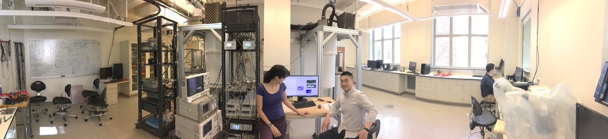
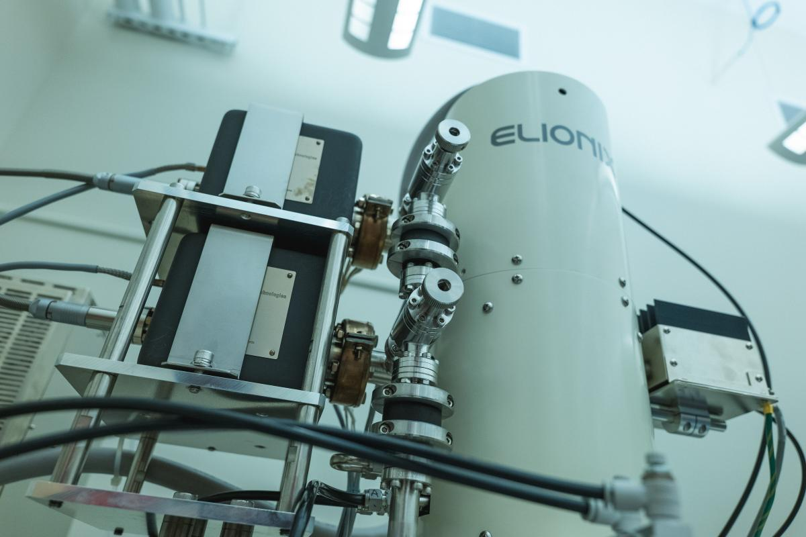
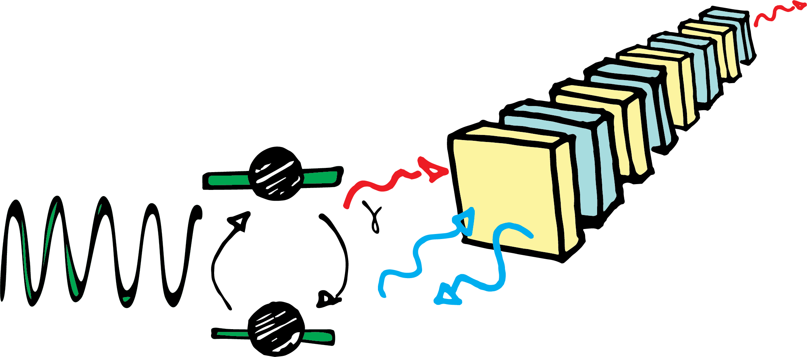
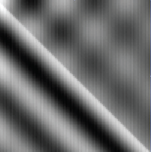
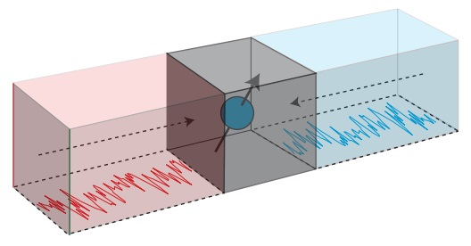
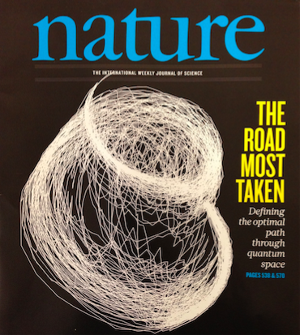

Quantum sensing can benefit from entanglement protocols that can be interpreted as allowing qubits to go backward in time to choose an optimal initial state. Read the paper at Physical Review Letters (2024) or on the arXiv.
Physics Synposis > Measuring Qubits with “Time Travel” Protocol
WashU Physics > Quantum Advantage: Building 'Time-Traveling' Quantum Sensors
A pair of entangled qubits allows us to measure quantum memory effects, then probe how the Zeno effect can suppress the decoherence of entanglement. Read the paper at Physical Review Letters (2024) or on the arXiv.
.The motion of a single electron trapped on solid neon forms the quantum states of a qubit. Read the article Nature (2022) or on the arXiv. You can read the press release: Neon ice shows promise as new qubit platform, Argonne National Lab's press release: "The quest for an ideal quantum bit", IEEE Spectrum's article "Frozen Neon Invention Jolts Quantum Computer Race"
.
What if energy could be the square root of a negative number? We've done an experiment to characterize a quantum system that has complex numbers for energy levels. Find the article from Nature Physics (2019) or on the arXiv. You can read the press release: Complex energies, quantum symmetries
.Do quantum movies look funny when you play them backwards? Turns out they do... at least most of the time. We characterize how entropy is produced by the process of quantum measurement alone. Phyiscal Review Letters or on the arXiv. You can read the press release: Characterizing the "arrow of time" in open quantum systems

You can find his dissertation on the arXiv for a pedagogical overview of quantum measurement with superconducting circuits.
What happens when Maxwell's demon tries to sort molecules that are in a superposition of hot and slow at the same time? Read it in Phyiscal Review Letters or on the arXiv. You can read the press release: Demon in the details of quantum thermodynamics
We experimentally demonstrate frequency sensitivity that scales as 1/T^2 using optimal control over a superconducting qubit. Read it in Phyiscal Review Letters or on the arXiv. You can read the press release: A bit of a 'quantum magic trick',
Recent article by P. M. Harrington et al. is published in Phyiscal Review Letters and on the arXiv. You can read the press release: Shaking Schrodinger's Cat, or other media coverage: in The Week.
(April 2016) Mapping Quantum Trajectories in Spontaneous Emission:Recent article by M. Naghiloo et al. is published in Nature Communications and on the arXiv.

Recent Article by N. Foroozani et al. is published in PRL. Physical Review Letters 116 (2016). arXiv.
Read the Washington University Press Release.
(March 2015) The Past Quantum State: "Prediction and retrodiction for a continuously monitored superconducting qubit".
Recent Article by D. Tan et al. in Physical Review Letters.
How full measurement records reveal more information about the state of a quantum system than past alone. D. Tan et al, arxiv (2014)
Popular Coverage of the paper:
Washington University Record: "In the quantum world, the future affects the past" D. Lutz (Feb 2015)
Science News: "Quantum guessing game uses the future to predict the past", A. Grant, (Feb 2015)
International Business Times: "Time runs bizarre in quantum world where past is changed by the future", Jayalakshmi K, (Feb 2015)
Daily Mail: "Can the past be changed by the FUTURE?", E. Zolfagharifard, (Feb 2015)

"Mapping the optimal route between two quantum states" by S. J. Weber, A. Chantasri, J. Dressel, A. N. Jordan, K. W. Murch, and I. Siddiqi.
Read it on arxiv or in Nature.
Some press releases related to the paper:
Washington University in St. Louis: Finding Quantum Lines of Desire
UC Berkeley: Watching Schrodinger's Cat Die
University of Rochester: Mapping the Optimal Route between Two Quantum States
Nature: News & Views by Adrian Lupascu Quantum physics: The path most travelled
Huffington post: Robert Sanders
Live Science: Quantum Particles Take the Road Most Traveled